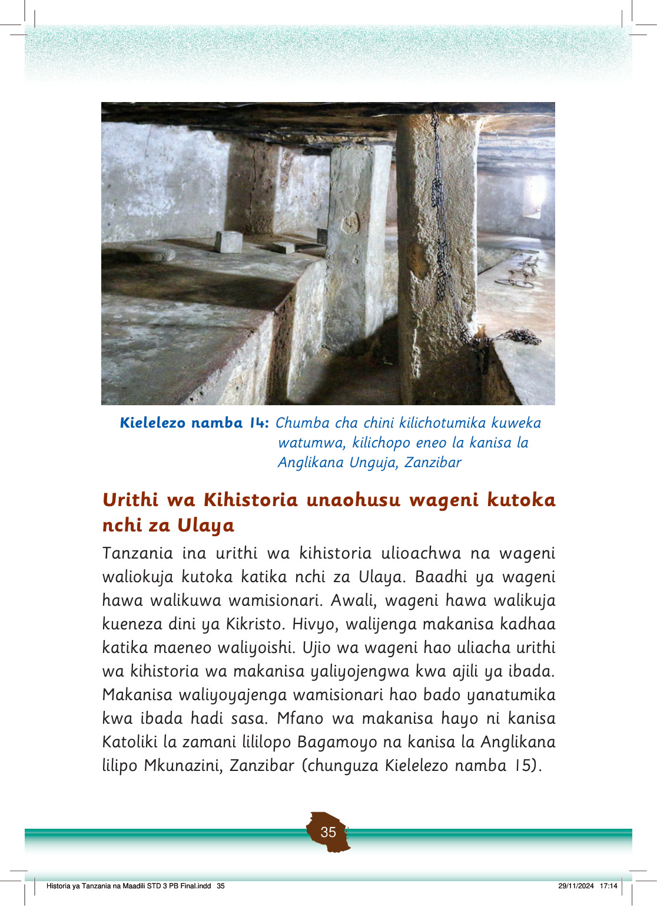

Chumba cha chini cha kale kilichotumika kuweka watumwa. Ndani kuna nguzo za mawe na minyororo inayoning’inia.
Kielelezo namba 14: Chumba cha chini kilichotumika kuweka watumwa, kilichopo eneo la kanisa la Anglikana Unguja, Zanzibar
Urithi wa Kihistoria unaohusu wageni kutoka nchi za Ulaya
Tanzania ina urithi wa kihistoria ulioachwa na wageni waliokuja kutoka katika nchi za Ulaya.
Baadhi ya wageni hawa walikuwa wamisionari.
Awali, wageni hawa walikuja kueneza dini ya Kikristo.
Hivyo, walijenga makanisa kadhaa katika maeneo waliyoishi.
Ujio wa wageni hao uliacha urithi wa kihistoria wa makanisa yaliyojengwa kwa ajili ya ibada.
Makanisa waliyoyajenga wamisionari hao bado yanatumika kwa ibada hadi sasa.
Mfano wa makanisa hayo ni kanisa Katoliki la zamani lililopo Bagamoyo na kanisa la Anglikana lilipo Mkunazini, Zanzibar (chunguza Kielelezo namba 15).
Historia ya Tanzania na Maadili STD 3 PB Final.indd 35
29/11/2024 17:14